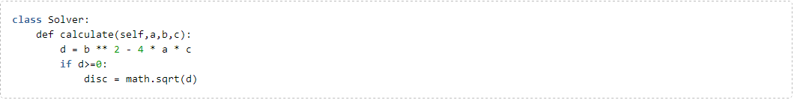
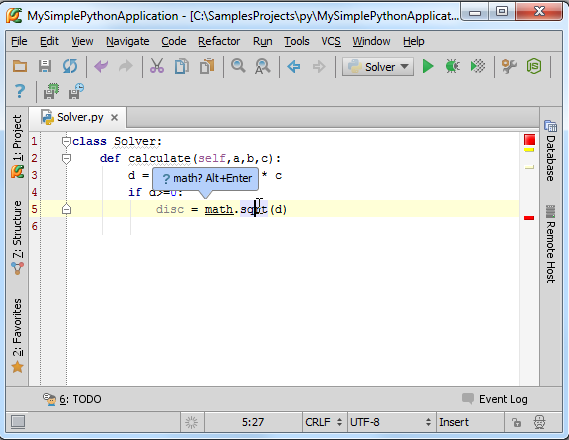
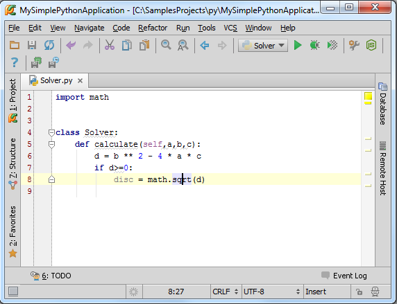
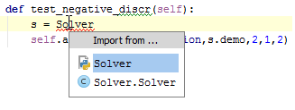
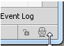
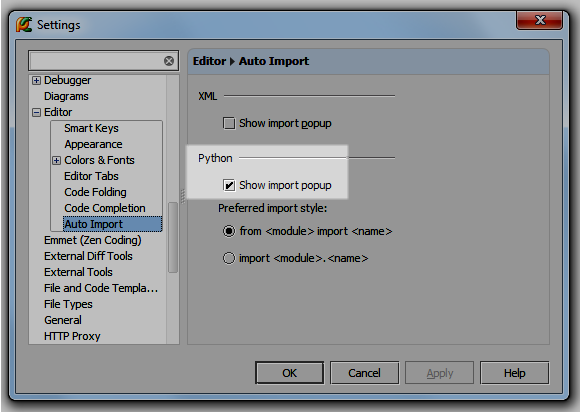
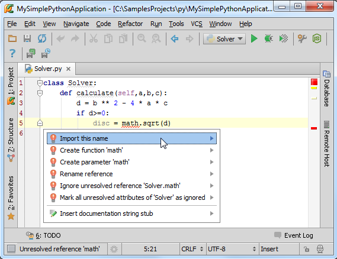
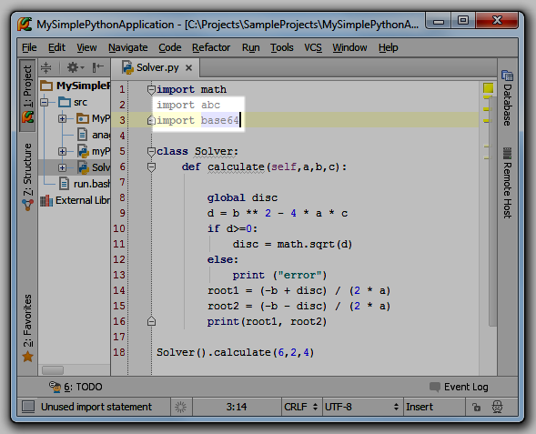
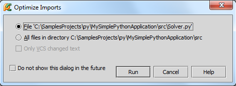
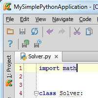

1、导入模块
我们在编程过程中经常会不经意的使用到一些尚未导入的类和模块，在这种情况下Pycharm会帮助我们定位模块文件位置并将其添加到导入列表中，这也就是所谓的自动导入模块功能。
为了研究这个功能，我们借用之前已经编写好的Solver类，输入以下代码：

在输入math.sqrt(d)的时候，Pycharm会弹出一个菜单来提示你导入缺失的模块：

按下Alt+Enter，采取快捷菜单中的建议，此时import命令会被添加到导入模块的代码部分，并且输入光标仍留在原位，方便我们继续输入而无需重定位：

值得一提的是，如果当前有多个可选的导入资源，Pycharm会给出提示列表来供用户选择：

2、配置导入助手
这里有一个小问题，如果这个窗口出现让你很烦恼，不要着急，单击右下角那个帅哥就可以关闭它了：

单击那个帅哥头像会弹出一个窗口，取消Import popup复选框，此时就取消了自动导入的功能。当然在配置对话框的Auto-Import page页面也可以进行同样操作（Settings → Editor → Auto-Import）：

当然，如果你希望关闭导入助手，直接取消这一项的勾选即可（Settings → Editor → Auto-Import）。
3、快速导入
当导入助手关闭时，不必惊慌。此时Pycharm不会直接给出提示，但会以红色波浪线标记缺失模块的代码位置，同时在左侧显示一个红色灯泡，单击这个灯泡，或者按下Alt+Enter快捷键：

在我们这个例子中应选择导入对应的缺省库，导入完成，红色波浪线消失。
4、导入助手的优化
当你在完善代码的过程中，总会停止使用一些导入声明（例如调试代码所对应的库，在调试完成后就不再起作用）。然而这些import声明仍然存在于你的工程中，你不得不停下来从头搜索，找出并删除这些声明语句，这种做法不仅效率低而且容易出错，很可能会多删或者漏删。
Pycharm能够帮助我们处理掉这些冗余的import声明语句，也就是所谓的 Optimize Imports功能，这个功能能够帮助你随时删除工程中的冗余import声明语句。
注意到，在Pycharm编辑环境中那些冗余的imports语句都是灰色显示的：

为了移除这些冗余语句，按下Ctrl+Alt+O（或者选择Code → Optimize Imports菜单命令），Pycharm弹出如下对话框，提示你选择需要清理的文件（当前文件还是当前目录下的所有文件）：

单击OK，清理完成：
